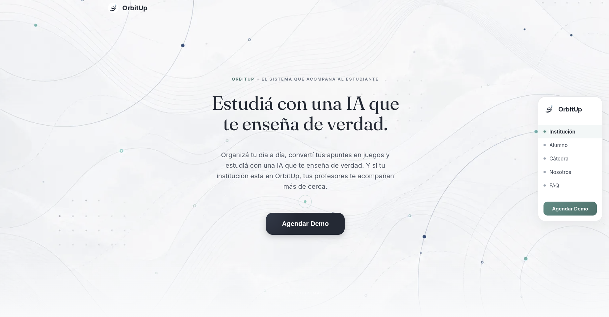

OrbitUp Ecosystem
18 Months Full-Cycle (2025–2026) · Co-founder & CTOSole full-time developer and CTO for 1.5 years. Engineered and maintained a cross-platform learning platform from ground zero to production, supporting 800+ active university students through weekly zero-downtime releases.
Native mobile app on iOS (App Store) and Android (Google Play) using React Native / Expo, alongside a student web portal, desktop client, and public marketing web.
Node.js and Express on Railway with MongoDB. JWT session rotation, connection pooling, and caching architected to handle heavy exam-week traffic spikes.
Institutional portal for university professors with bidirectional integrations for Google Classroom API and Moodle LMS course synchronization.
Over 3,000 automated tests in CI guarding every release. Generative LLM endpoints with deterministic JSON schema validation for exam generation.
